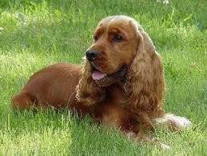
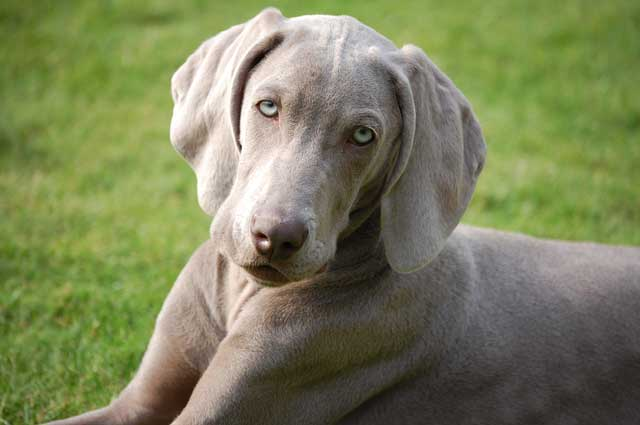
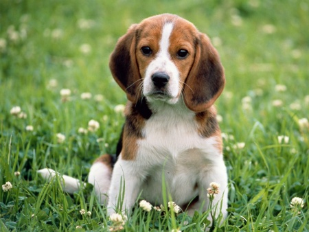
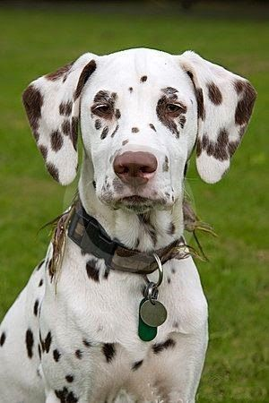
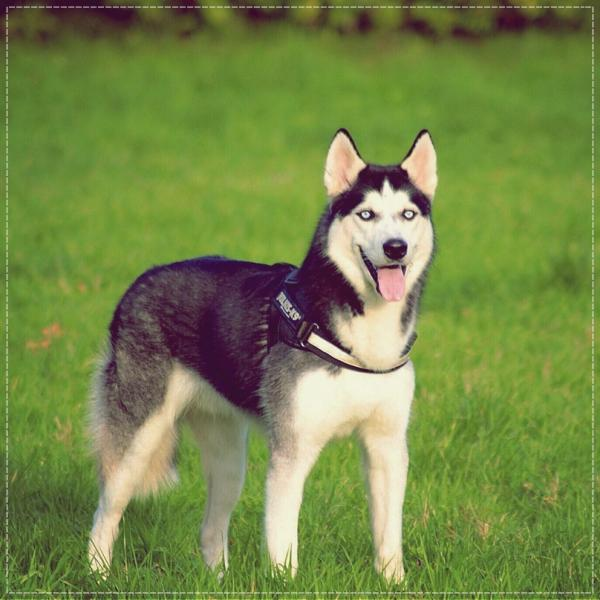

Hábil perro de caza con aptitudes para el rastreo. Posee una disposición amigable y una actitud que lo ha convertido en la tercera raza familiar más popular.Su pelaje vienen en tonalidades de oro claro y oscuro.Son buenas mascotas de familia, y particularmente pueden ser pacientes con los niños.
Cocker

Es un perro fuerte, atlético, compacto y equilibrado. El pelaje puede ser de un sólo color o de varios colores. El pelo es liso y de textura sedosa. Las extremidades y la parte inferior del cuerpo deben tener flecos. Tiene las orejas largas y de forma lobular que le llegan como mínimo hasta la nariz. Es determinado, inteligente, atlético, alerta, resistente y son buenas mascotas familiares. No le gusta estar solo,y creará un vínculo muy estrecho con una sola persona de la familia, por lo general quién lo alimenta.
Weimaraner

Su pelaje, corto y espeso, le protege muy bien de la humedad; esto le permite ser un cazador eficaz en terrenos pantanosos. Son fáciles de adiestrar y se comportan muy bien como perros de guarda. Son cariñosos y obedientes.
Beagle

son una raza de perros de tamaño pequeño a mediano,con patas cortas y orejas largas y suaves.Esta raza se puede encontrar con una amplia variedad de colores. Aunque el color del pelaje tricolor formada por una base de color blanco con grandes áreas negras y tonos marrón claro sea la más común. Son animales inteligentes, y populares como animales domésticos debido a su talla, carácter tranquilo y carencia de problemas de salud congénitos.
Dalmata

Su característica principal es su singular pelaje moteado de color negro o hígado. Al nacer, las crías carecen de manchas, las cuales van apareciendo por todo su cuerpo durante el primer año de vida.Son animales de buena musculatura, de tamaño mediano, con una gran resistencia.En su comportamiento es un perro aparentemente independiente y sereno.
Siberian Husky

Es un perro de tamaño mediano. Acostumbrado a vivir en la nieve, tiene el pelaje mucho más denso y grueso que otras razas de perros. Es capaz de modificar drásticamente su pelaje según el lugar donde viva.Puede ser una buena mascota de familia, ya que son cariñosos con personas de todas las edades.